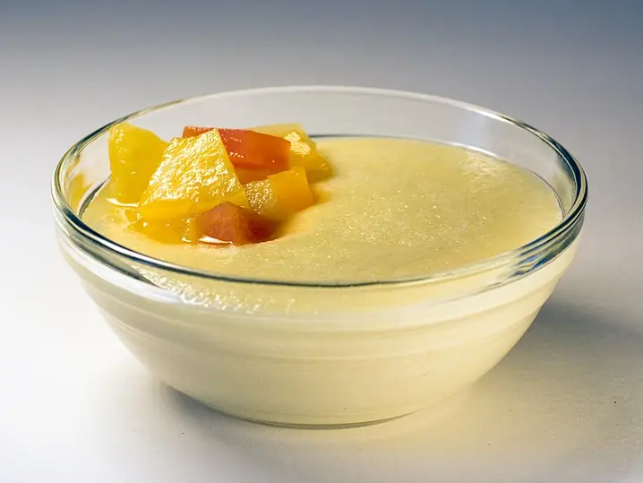

Фото: Alice Wiegand, CC BY-SA 3.0

Манная каша
Гладкая манная каша на молоке без единого комочка
10 мин2 порц.307 ккал на порциюБ 10 · Ж 11 · У 43Русская кухня
Продукты на 2 порц.
- Молоко2,5 стак.
- Манная крупа4 ст. л.
- Сахар1 ст. л.
- Соль1 щеп.
- Сливочное масло10 г
- Варенье / джем по желаниюпо вкусу
Как готовить
- Налейте молоко в кастрюлю, добавьте соль и сахар, доведите до кипения на среднем огне.
- Убавьте огонь до слабого и тонкой струйкой всыпайте манку, всё время мешая венчиком.
- Варите 3-4 минуты, непрерывно помешивая, пока каша не загустеет.
- Снимите с огня, добавьте масло, накройте крышкой на 3 минуты.
- Подавайте с вареньем или ягодами.
Совет. Чтобы точно не было комков, смешайте манку с сахаром заранее или всыпайте её в холодное молоко и варите, помешивая.